Your rebuilt profile
Reconstructed from your PDF export, section by section.
{{ sec.title }}
{{ sec.body }}
Suggested improvements
Accepted changes are copied to your clipboard section by section. Paste them into LinkedIn.
{{ f.title }}
{{ f.body }}
{{ p.name }}
Pinned now
{{ p.meta }}
{{ p.reason }}
Pin
{{ pinNote }}
Use suggestions
{{ applyPinsLabel }}
{{ p.name }}